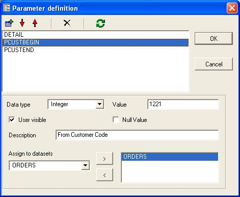
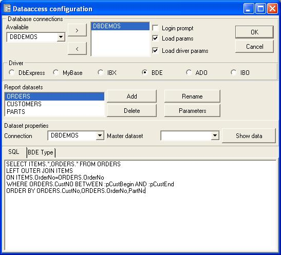
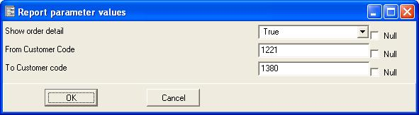

Report parameters is a powerful feature, here is a list of samples you can do with parameters
You can define the parameters, and also preview how the parameters will show to the user.
Parameter definition window allows to add, modify and delete parameters, you can assign parameters to datasets (parametrized querys). The parameters can be visible or not visible to the user. You can assign a single parameter to multiple datasets.
This is a sample of report parameters:

The data definition properties for this sample, see that parameters are preceded by the : symbol.

The user parameters window is called in preview window when user click the parameters button:

Parameter types
| Type | Description |
| String, Integer, Float, Date, Time, DateTime | Basic types, they contain fixed values |
| Boolean | False or True values |
| Expres.Bef.Open | Contains a expression evaluated before any dataset is open, so the result can be assigned to a parametrized query for example |
| Expres.Aft.Open | Contains a expression evaluated after opening all datasets, so it can contain dataset fields |
| String Substi. | You use this parameter type assigning it to at least one dataset, you must provide a search string, the engine will search in the sql sentence for that string and will replace it with the value of the parameter. This can be used to pass the entire sql sentence as a parameter or only the WHERE clause for example. |
| Value list | You provide two list, one for value captions, and other for real values, the engine will show to the user a combo box to select from the caption list, and will assign the corresponding value from list of values. |
About parameters and database drivers
When you place a parameter inside a query:
SELECT MYDATA FROM MYTABLE WHERE MYCODE=:CODE
This is called a parametrized query, the query is send throught the database driver, and translated by the driver to a similar syntax, the parameters must be reconized by the database driver and the database engine (usually a sql server).Depending on the SQL server the query will translate by the database driver natively with different syntax:
SELECT MYDATA FROM MYTABLE WHERE MYCODE=?
SELECT MYDATA FROM MYTABLE WHERE MYCODE=@CODE
This query is "compiled" by the database engine, usually this process parse the query, translating to a native (and fast) format, selects a optimization method (query plan) including indexes used by the engine, the query can be compiled once (also called prepare procedure), and execute multiple times, the successive executions will be lot faster because the database engine can bypass the parse of the query and analizing index statistics to select the best path to execute the query.
So passing parameters to a database involves the database driver and database server, some database drivers, does not support large parameters or does not implement some parameter types (date,time), others are a bit tricky about detecting them, for example:
.. WHERE :CODE=MYCODE can generate a syntax error, but WHERE MYCODE=:CODE works ok, this is because database driver parse the query to translate it to database server intermediate format, and the database driver parser can be not accurately programmed.
Also because the query is compiled by the database server and a optimization plan must be selected, the parameters can not be placed in any part of the SELECT sentence.
SELECT .... ORDER BY :MYORDER1,:MYORDER2
The above sentence is not valid because a parameter inside the order by clause is usually not valid, think that changing the order of a query can change the way the query is optimized by the database server, for example if the where clause and the order by clause references same field, only one index is needed, if they differ, a diferent query plan (index path) is needed to execute the query, so a recompilation of the query is needed.
Some database drivers and servers allow parameters inside the select fields part but others not:
SELECT :MYPARAM,MYFIELD FROM ....
This is also applicable to linked querys, but linked querys takes the parameters from the master query fields by name.
Note: When you missplace a parameter, the database driver can ignore not returning you any error.
Workarounds
Using query parameters is efficient and the prefered way, but when database drivers have some problem, or it's not possible to do it you must find alternative methods. For example, if the database driver does not accept Date parameter type, you can define the parameter as string, the syntax of the date will be defined, then by dabase server, for example '31-JAN-2004' or '01/31/2004'.
So a query can not be compiled/prepared if the order by clause change between executions, or the where clause syntax changes, to allow the use of parameters in this querys, there is the String Substitution parameter type, it's not a real parametrized query, it's a query that will be changed before sending it to the database driver. The use of the :PARAM syntax is not needed.
For example:
SELECT .... ORDER BY 1,2,3
You can create a string substitution parameter assigned to one or more datasets with properties:
| Property | Value |
| Name | ORDERBYCLAUSE |
| Value | ORDER BY 1,2,3 |
| Search For | ORDER BY 1,2,3 |
| Description | Order by clause |
Changing the value of the parameter to:
ORDER BY 2,1,3
Will search for the string ORDER BY 1,2,3 inside the sql sentence, if found, it will be replaced by ORDER BY 2,1,3 then , the new generated sql sentence is executed.
This is also usefull to change some part of the where clause (or the entire clause) or also to change the entire sql sentence at runtime.
How to modify parameter values at runtime
Report parameters are added to the evaluator as variables when the report begin, so if you want to modify the values while the report is executing you must alter the variable value using a expression like:
paramname:='NewStringValue'
From Delphi/Kylix/Builder you can evaluate this expression:
CLXReport1.Report.Evaluator.EvaluateText('paramname:=''NewStringValue''');.
Using parameters from Delphi/Builder/Kylix/ActiveX
You can call parameter window from your application with the method ShowParams:
VCL/CLX Components:
if CLXReport1.ShowParams then
CLXReport1.Execute
You can modify report parameters in runtime in your application.
VCL/CLX Components:
CLXReport1.Report.Params.ParamByName('CUSTOMERINI').Value:=2;
ActiveX:
ReportManX.ParamByName('CUSTOMERINI').Value=2
ReportManX.Report.Params.Items[0].Value=2;
ReportManX.Report.Params.Items.Count;